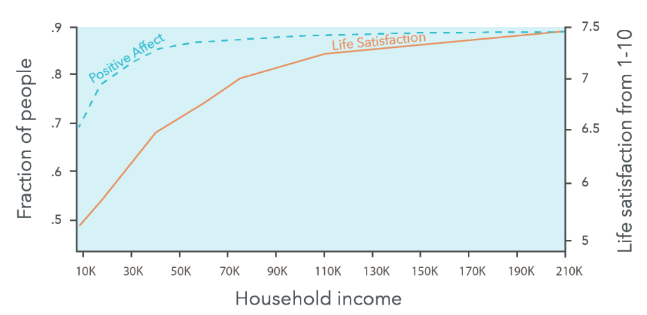
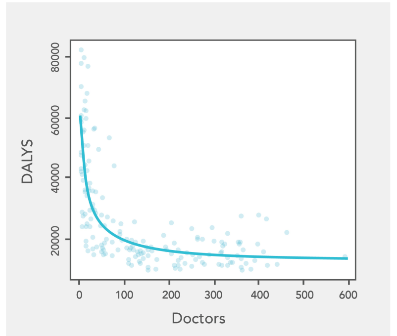

80,000 Hours
Table of Contents
- 1. Chapter 1: What makes for a dream job
- 2. Chapter 2 & 3: How to make a difference
- 3. Chapter 4: Choose an area to focus
- 4. Chapter 5: World's biggest problems
- 5. Chapter 6: Which Jobs help people the most?
- 6. Chapter 7: Best Long-Term Strategy
- 7. Chapter 8: How to find the right career for you
- 8. Chapter 10: How to get a job
- 9. Chapter 11: Join a community
- 10. Miscellaneous
source: 80,000 Hours
To have a truly fulfilling life, we need to turn outwards rather than inwards. Rather than asking “What’s my passion?,” ask “How can I best contribute to the world?” pg. 217
To do what contributes, build useful skills and apply them to meaningful problems. Here’s the three key stages to focus on over time:
- Explore
- Build career capital to become as great as you can be.
- Deploy.
1. Chapter 1: What makes for a dream job
To have a dream job,
- don’t worry too much about money and stress, and
- don’t endlessly self-reflect to find your one true passion.
- Rather, get good at something that helps others.
It’s best for you, and it’s best for the world. pg. 35
1.1. We can't predict what makes us happy
- We're not always great at predicting what will make us most happy, and we don’t realise how bad we are.
- we're even bad at remembering how satisfying different experiences were
1.2. Easy and Well Paid != Dream job
1.2.1. Happiness from Money saturates at around 50k a year
- pg. 20 If we look as life satisfaction: Money makes you happier, but only a little
- pg. 21 If we look at day-to-day happiness, income seems even less important. “Positive affect” is whether people reported feeling happy yesterday. The left axis of the chart below shows the fraction of people who reported “yes.” This line goes flat around $50,000,
- pg. 22 We think there’s a good chance this result is an error, and day-to-day happiness does continue to increase with income, at least a little bit

Figure 1: Happiness vs Money
1.2.2. Dont aim for low stress - Sense of control removes Stress
- Because strangely high ranking jobs had less stress: studies of high-ranking government and military leaders found they had lower levels of stress hormones and less anxiety, despite sleeping fewer hours, managing more people, and having higher occupational demands.
- Becuase sense of control protects from stress: setting their own schedules and determining how to tackle the challenges they face protects them against the demands of the position.
1.2.3. Seek support, meaningful work and challenge
Instead of seeking to avoid stress, seek out a supportive context and meaningful work, and then challenge yourself.
1.3. Dream Job
What should you aim for in a dream job?
1.3.1. Work that’s engaging
1.3.2. Work that helps others
1.3.3. Work you're good at
- Skill ultimately trumps interest
That’s not to say you should only do work you’re already good at — but you do want the potential to get good at it. pg. 27
1.3.4. Work with supportive colleagues
1.3.5. Work that doesn’t have major negatives
1.3.6. Work that fits with the rest of your life
1.4. Don't ceaselessly serach for true passion
- If you don’t have a “passion,” don’t worry — you can still find work you’ll become passionate about. pg. 31
- Don't let the idea of your "one true passion" eliminate other options pg. 31
- Because you can become passionate about new areas pg. 31
Rather than “follow your passion,” our slogan for a fulfilling career is: get good at something that helps others. Or simply: do what contributes. pg. 32
2. Chapter 2 & 3: How to make a difference
Due to our fortunate positions in the world, there’s a lot we can do to make a difference without making significant sacrifices, whatever jobs we end up in. pg. 56
- Give 10% of your income to effective charities.
- Use your political influence, such as by voting.
- Help others have an impact.
2.1. Doctor's and their impact
Researchers largely agree that medicine has only increased average life expectancy by a few years. Most gains in life expectancy over the last 100 years have instead occurred due to better nutrition, improved sanitation, increased wealth, and other factors. pg. 39
2.1.1. Impact of doctors saturate at around 150 doctors per 1 Lakh people
The curve goes nearly flat once you have more than 150 doctors per 100,000 people. After this point (which almost all developed countries meet), additional doctors only achieve a small impact on average. pg. 40

Figure 2: DALYs (Disability-Adjusted Life Years) per 100,000 people vs. Doctors per 100,000 people
2.2. Easy way to make impact is to donate
- Give 10% of your income to the world’s poorest people. It’s as simple as that. pg. 48
Normally when we think of doing good with our careers, we think of paths like becoming a teacher or charity worker, which often pay under half what you could earn in the private sector, and may not align with your skills or interests. Compared to switching to those careers, giving 10% of your income could easily be less of a sacrifice. pg. 50
2.2.1. You can make more impact than a doctor
With a typical US graduate salary, donating 10% of your income to the Against Malaria Foundation could therefore save more than one life every year. pg. 51
2.2.2. If all the rich donated 10%, world problems could go away
If everyone in the richest 10% of the world’s population donated 10% of their income, that would be $5 trillion per year. That would be enough to double scientific research funding, raise everyone in the world above the $2.15 per day poverty line, provide universal basic education, and still have plenty left to fund a renaissance in the arts, go to Mars, and then invest $1 trillion in mitigating climate change. None of this would be straightforward to achieve, but it at least illustrates the enormous potential of greater giving.49 pg. 52
2.2.3. >60,000k a year, you are in global 1%
If you earn $60,000 per year after taxes and don’t have kids, then globally speaking, you are the 1%. pg. 53
2.3. Vote right or do political advocacy
3. Chapter 4: Choose an area to focus
4. Chapter 5: World's biggest problems
4.1. Health and Poverty
4.1.1. Poor in US is not poor
Even someone living on the US poverty line of $14,580 per year (as of 2023)66 is richer than about 85% of the world’s population,67 and about 20 times wealthier than the world’s poorest 700 million, who mostly live in Central America, Africa, and South Asia on under $800 per year.68 These figures are already adjusted for the fact that money goes further in poor countries (purchasing power parity). pg. 68
4.1.2. Diarrohea takes more lives than war
Dr. Nalin develpoped Oral Rehydration Therapy as treatment for diarrhoea. Over the second half of the 20th century, efforts by Dr Nalin and others did as much to save lives as achieving world peace over the same period would have done.
- The number of deaths each year due to diarrhoea have fallen by 3 million over the last five decades
- All wars and political famines killed about 2 million people per year over the second half of the 20th century.
4.1.3. Health is measured in: Quality-Adjusted Life Year
Health is measured in a standard unit used by health economists, called the “quality-adjusted life year.” pg. 71
4.2. Future Generation
Focusing on future generations might be even more effective than tackling global health pg. 74
4.2.1. They can't speak, their plight is abstract
- First, future generations matter, but they can’t vote, they can’t buy things, and they can’t stand up for their interests. This means our system neglects them. You can see this in the global failure to come to an international agreement to tackle climate change that actually works. pg. 74
- Second, their plight is abstract. We’re reminded of issues like global poverty and factory farming far more often. But we can’t so easily visualise suffering that will happen in the future. pg. 74
4.3. BioRisk
- In 2006, The Guardian ordered segments of smallpox DNA via mail. If assembled into a complete strand and transmitted to 10 people, a study estimated it could infect up to 2.2 million people in 180 days pg. 76
- Lots of death: COVID-19 disrupted the world and has, so far, killed over 10 million people.92
- But not much focus: We estimate that over $600 billion is spent annually on efforts to fight climate change, compared to $1–$10 billion towards biosecurity aimed at addressing the worst-case pandemics. pg. 77
4.4. AI Alignment
- Low investment: Billions of dollars are spent trying to make artificial intelligence more powerful, but hardly any effort is devoted to making sure that those added capabilities are implemented safely and for the benefit of humanity. pg. 78
- Few researchers: We estimate the number of full-time researchers working directly on the alignment problem is around 300, making it over 10 times more neglected than biosecurity. pg. 81
4.5. Effective Altruism
If you’re uncertain which problems will be most pressing in the future, a third strategy is to simply save money or invest in your career capital (which we’ll get to in chapter 7), so you’re in a better position to do good when you have more information. pg. 83
5. Chapter 6: Which Jobs help people the most?
5.1. Approach 1: Earning to give
People who are a good fit for a higher-earning option can donate to these organisations, making a large indirect contribution.
Won’t people earning to give end up being influenced by their peers to spend the money on luxuries rather than donating? But this doesn't happen as offten as you might think. pg. 95
5.2. Approach 2: Presuade other to Earn to give
5.3. Approach 3: Research
When you look at the problems we’re most concerned about — like preventing future pandemics or reducing risks from AI systems — many are mainly constrained by a need for additional research..
Research is especially promising when you’re a very good fit, because the best researchers achieve much more than the median. pg. 100
While lots of research happens in academia, there are also many research positions elsewhere. For example, many private companies develop crucial technology — BioNTech is now famous for developing the first COVID vaccine— while think tanks often do important research in policy. pg. 101
5.4. Approach 4: Government and policy
5.5. Approach 5: Building organisations
6. Chapter 7: Best Long-Term Strategy
6.1. Be an Expert
A small percentage of the workers in any given domain is responsible for the bulk of the work. Generally, the top 10% of the most prolific elite can be credited with around 50% of all contributions, whereas the bottom 50% of the least productive workers can claim only 15% of the total work, and the most productive contributor is usually about 100 times more prolific than the least. pg. 109
- Experts only reach their peak abilities between age 30 to 60 pg. 116
- Epert-level performance in established fields usually requires 10 to 30 years of focused practice. pg. 117
“I have never found a convincing case for anyone developing extraordinary abilities without intense, extended practice.”
- K. Anders Ericsson (Psychologist) pg. 117
6.2. Career Capital
By “career capital,” we mean anything that puts you in a better position to make a difference or secure a fulfilling career in the future.
Early in your career, it’s more important to ensure you invest in your skills and get the training you need to maximise your long-term impact.
Focusing on impact too much too early can even be shortsighted, because it can preclude being in an even better position later. This means that for most people, the top priority early in their career is to build what we call career capital.
6.2.1. Five Components of Career Capital
- Skills and knowledge
- Connections
Credentials
We don’t just mean formal credentials like having a law degree, but also your achievements and reputation — or anything else that acts as a good signal to future collaborators or employers. If you’re a writer, it could be the quality of your blog. If you’re a coder, it might be your GitHub. pg. 119
- Character
Runway: How much money will you save in this job? Your “runway” is how long you could comfortably live with no income. pg. 119
We recommend aiming for at least six months of runway to maintain your financial security, while 12–18 months of runway gives you the flexibility to make a major career change.
6.2.2. How to get Career Capital
Get good at something useful.
Gain abilities that are valued in the job market — making it easier to bargain for the ingredients of a fulfilling job — as well as those that are needed in tackling the world’s most pressing problems
Choose valuable skills to learn
We covered some broad skill types that we think are valuable for doing good in the previous chapter: organisation building, communication and community building, research, earning to give, and government and policy.
- Find skills that are a good fit for you
- Practice
- Increase your chances of being in the right place at the right time
In short, try to maximise your rate of useful learning pg. 121
6.2.3. Concrete Steps for gaining career capital
- Work at a growing organisation that has a reputation for high performance in your path
- Projects don’t (automatically) have well-defined scopes or success criteria. Great performance might not be possible, or could take many years.
- Work with any high-performing, high-integrity team, where you can be mentored in the highly useful skill of generally getting stuff done at work.
- The private sector might actually be a better place to learn productivity, pg. 125
- Even putting impact aside, working in an organisation with a social mission can offer major advantages, such as getting to learn about a pressing global problem, meeting and being around other people who want to do good, and more motivation and meaning.
- If your goal is career capital, you should prioritise working somewhere you’ll get good mentoring and feedback on your work. It’s hard to learn without good teaching or role models. Likewise, the character of the people you work with will rub off on you. pg. 126
A promising tech startup, which can potentially combine many of the benefits above: high- performing teams with strong incentives to produce results, rapid growth, and the opportunity to gain a generalist skillset. If the startup succeeds, you’ll also get a good credential and money. Of course, a lot of startups are terribly run, and likely to fail. pg. 126
- Go to graduate school in carefully chosen subjects
If we had to pick, the most attractive grad programmes might be economics or machine learning PhDs.
- Develop a useful skill
- Management
- whether it’s managing people, long and complex projects, or both.
- find ways to start managing on a small scale. Ideally, work under a great manager or find a mentor or coach who is, and then regularly check in with them about what is and isn’t working.
- Make sure to collect feedback from the people you manage.
- Sales and Negotiation
Sales can feel adversarial — like you’re trying to persuade people to do something against their interest. But the best kind of sales is collaborative: it’s about finding ways to meet the needs of both parties
- Management
- Do anything where you might excel (even if it’s a bit random)
6.2.4. Transferable Vs Specialist Career Capital
All else equal, when you’re earlier in your career, you should focus more on transferable career capital.
Unfortunately, however, all else is often not equal. While specialist career capital gives you fewer options, it’s often necessary to enter the most impactful jobs, so it’s still probably worth focusing on at some point.
*
Career capital is anything that puts you in a better position to make a difference in the future, including skills, connections, credentials, character, and financial runway. To get career capital, we suggest getting good at something useful. To do that, you need to:
- Focus on learning valuable skills.
- Learn skills that are a good fit for you.
- Practice for many years with good mentorship.
- Increase your chances of being in the right place at the right time (e.g. by working in new and rapidly growing fields). pg. 143
7. Chapter 8: How to find the right career for you
7.1. Think like a scientist
- Asking “What am I good at?” needlessly narrows your options. It’s better to ask: “What could I become good at?”
- But the bigger problem is that these methods aren’t reliable. pg. 145
- Instead, you should be prepared to think like a scientist — learn about and try out your options, looking outwards rather than inwards. * pg. 145
7.2. Being good at your job is more important than you think
- First, the most successful people in a field account for a disproportionately large fraction of the impact.
Second, as we argued, being successful in your field gives you more career capital.
This sounds obvious but can be a big deal. Generally being known as a person who gets shit done and is great at what they do can open all sorts of (often surprising) opportunities. pg. 147
7.3. Going with your gut doesn't work
Why introspection, going with your gut, and career tests don’t work?
- Almost all of the tests (IQ, Intervies, Peer ratings, Job knowledge, …) are fairly bad. A correlation with job performance of 0.6 (for IQ) is pretty weak. And the accuracy for longer-term predictions is probably even worse pg. 150
7.3.1. It’s hard to train our gut instinct
It’s hard to train our gut instinct when,
- The results of our decisions take a long time to arrive.
- We have few opportunities to practise.
- The situation keeps changing.
This is exactly the situation with career choices:
- we only make a couple of major career decisions in our life,
- it takes years to see the results,
- and the job market keeps changing.p
Your gut can still give you clues about the best career. It can tell you things like “I don’t trust this person” or “I’m not excited by this project.” But you can’t simply “go with your gut.”
7.4. Like a scientist: Make hypothesis, and test
If it’s hard to predict where you’ll perform best ahead of time, and going with your gut intuition doesn’t work, then we need to take an empirical approach:
- Make some best guesses (hypotheses) about which options seem best.
- Identify your key uncertainties about those hypotheses.
- Go and investigate those uncertainties.
And even when your investigation is complete and you start a job, that too is another experiment. After you’ve tried the job for a couple of years, update your best guesses, and repeat.
Finding the right career for you isn’t something you’ll figure out right away — it’s a step-by-step
7.4.1. Cheap Tests for potential careers
- Read our relevant career reviews,
- Speak to someone
- Read one or two books. (20 hours)
- Look for a relevant project that might take 1–4 weeks of work
- Only then, consider taking on a 2– to 24–month commitment
7.4.2. Try something
You’ll never be certain about which option is best, and even worse, you may never even feel confident in your best guess pg. 156
7.4.3. Stop when your best guess stops changing
So when should you stop your research and try something?
When your best guess stops changing. pg. 156
7.5. Explore early in the career
To get a better sense of your potential over the long term, you should try to look at your rate of improvement rather than just recent performance. pg. 158
Suppose you’ve decided to try a job for a few years. You now face a tradeoff: should you stick with it, or quit with the hope of finding something better? Many successful people explored a lot early in their career. pg. 159
In the book Range: Why Generalists Triumph in a Specialized World, David Epstein argues that most people try several paths, and that athletes who try several sports before settling on one tend to be more successful.
A 2018 study in Nature found that “hot streaks” among creatives and scientists tended to follow periods of exploring several areas.179 pg. 160
7.6. If unsure, quit
The sunk cost bias leads us to expect people to:
- Continue with their current path for too long.
- Want to avoid the short-term costs of switching.
- Be averse to leaping into an unknown new option.
8. Chapter 10: How to get a job
8.1. Use connections
- Which would you prefer: a recommendation from someone you trust, or 20 CVs from people who saw your job listing on indeed.com? pg. 192
- Many recruiters consider referrals to be the best method of finding candidates.
- But job seekers usually get things backwards — they start with the methods that recruiters least like. This is not optimal.
- Applicants find around 50% of jobs through connections,200 and many are never advertised. pg. 193
8.2. How to get Referrals
- You need to master the art of asking for introductions. W
- Focus your profile on your most impressive accomplishments. Be as concrete as possible Cut the rest. It’s better to have two impressive achievements than two impressive achievements and three weak ones.
- If you already know someone in the industry who can hire people, then ask for a meeting to discuss opportunities in the industry.
- There doesn’t need to be an open position — employers will often create positions for good people.
- To find out who your connections know, use LinkedIn, Twitter, or other social networks. Say you want to work at Airbnb. Go to LinkedIn and search “Airbnb.” It’ll show a list of all your contacts who work at Airbnb, followed by connections of connections who work at Airbnb. Pick the person with the most mutual connections and get in touch.
8.3. Capitalize you Referrals
When you meet an employer, ask lots of questions to understand their challenges. Discuss how you might be able to contribute to solving these challenges. This is exactly what great salespeople do. A survey of research on sales concluded “there is a clear statistical association between the use of questions and the success of the interaction.”
8.4. Negotiation
Most people are so happy to get a job, or awkward about the idea of negotiating, that they never try. But 10 minutes of negotiation could mean major benefits over the next couple of years. So the key message here is to actually consider doing it.
Negotiation is not always appropriate.
- Don’t do it if you’re only narrowly better than the other candidates or have no alternatives.
- Don’t negotiate until the employer has made an offer — it looks bad to start negotiating during the interview.
8.4.1. How to negotiate
- Explain the value you’ll give the employer, and why it’s justified to give you the benefits you want.
- Negotiate after you’ve started
9. Chapter 11: Join a community
One of the most powerful ways to improve your career — join a community.
- Don't get into echo chamber: It’s healthy to spend time in several communities, so your sense of your identity and connections aren’t too dependent on one group or set of ideas, which can make the views of the group hard to question and have an ‘echo chamber’ effect. pg. 212
- By “community,” we mean something very broad. It could be anything from a casual group of friends who are interested in the same thing, to larger movements, like animal welfare, with conferences and websites.
10. Miscellaneous
10.1. Productivity Tips
10.1.1. Use pomodoro to fight procrastination
Be more focused by using the pomodoro technique. Whenever you need to work on a task, set a timer, and only focus on that task for 25 minutes. It’s hard to imagine a simpler technique, but many people find it helps them to overcome procrastination and be more focused, making a major difference to how much they can get done each day.
10.1.2. Block Social Media
Block social media. It’s designed to be addictive, so it can ruin your focus. Changing tasks a lot makes you less productive due to attention residue. For this reason, many people have found tools that block social media during work hours, or for a certain amount of time each day, to majorly boost their productivity.
10.2. Surround yourself with great people
10.3. Apply scientific research into happiness
Although most advice about being happier isn’t based on anything much, the last few decades has seen the rise of “positive psychology” — the science of the causes of wellbeing
Below is a list of techniques recommended by Professor Martin Seligman, one of the founders of the field. Most of these are in his book, Flourish. Some of these techniques have been successfully replicated265 and multiple recent meta-studies have found statistically significant positive effects of all of these techniques. Test them out, and keep using them if they’re helpful.
- Rate your happiness at the end of each day.
- Start gratitude journaling. Write down three things you’re grateful for at the end of each day, and why they happened.
- Use your signature strengths: Make sure you use one of your top five strengths each day.
Try out a mindfulness practice — usually meditation
There’s a significant amount of evidence from trials that meditation helps with wellbeing, stress, mental health, focus, empathy, and more pg. 246
- Practise active constructive responding to celebrate successes with others
- Craft your job Often it’s possible to adapt your job so that it involves more of the satisfying ingredients, like ‘flow’ states, and less of what you don’t enjoy.
10.4. Learn how to learn
- Spaced repetition (e.g. use Anki)
10.5. Should you goto college?
On average, in financial terms, college is a great investment. Researchers on this topic widely agree that going to college significantly boosts your income, even after you account for (i) lost earnings while studying (ii) the fact that the people who go to college are often more able, which means they’ll earn more anyway. pg. 310
One famous study in the US found that students who were accepted to an ‘elite’ university but turned it down, went on to earn just as much. This suggests that elite universities are selecting more talented people, but not actually helping them be more successful (with the exception of low-income students, who did earn more). pg. 312